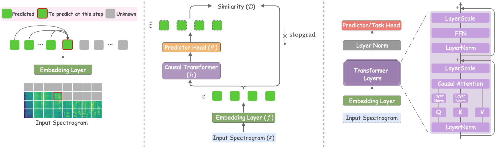

Umberto Cappellazzo
Gen AI Research Engineer
NatWest Group AI Research
London, UK
umbertocappellazzo [at] gmail.com
About Me
I am a Gen AI Research Engineer at NatWest Group in London, working in the CAIRO group led by Prof. Maja Pantic, with Dr. Stavros Petridis as my manager. I'm bulding multimodal deepfake detectors and general-purpose audio learners at scale (millions of hours, from data to pre-training & post-training).
From 2025 to 2026 I was a Research Associate in the iBUG group at Imperial College London, where I still supervise students and keep ongoing projects running. I received my PhD in Information Engineering and Computer Science from the University of Trento in January 2025, defended cum laude, advised by Dr. Daniele Falavigna and Dr. Alessio Brutti.
My research is on speech, audio, and multimodal large language models: audio-visual speech recognition with LLMs, self-supervised audio representation learning, parameter-efficient fine-tuning, and understanding what multimodal models actually rely on.
Publications
For a full list, see my Google Scholar.


MoME: Mixture of Matryoshka Experts for Audio-Visual Speech Recognition
Neural Information Processing Systems 2025 (NeurIPS)
[Paper] [OpenReview]

Adaptive Audio-Visual Speech Recognition via Matryoshka-Based Multimodal LLMs
2025 IEEE Automatic Speech Recognition and Understanding Workshop (ASRU)
[Paper]

Scaling and Enhancing LLM-Based AVSR: A Sparse Mixture of Projectors Approach
Interspeech 2025
[Paper]


Continual Contrastive Spoken Language Understanding
2024 Annual Meeting of the Association for Computational Linguistics (ACL Findings)
[Paper]

Evaluating and Improving Continual Learning in Spoken Language Understanding
Interspeech 2024
[Paper]

Improving Continual Learning of Acoustic Scene Classification via Mutual Information Optimization
2024 IEEE International Conference on Acoustics, Speech and Signal Processing (ICASSP)
[Paper]


An Investigation of the Combination of Rehearsal and Knowledge Distillation in Continual Learning for Spoken Language Understanding
Interspeech 2023
[Paper]
News
2026 Jul
I've started a new role as a GenAI Research Engineer at Natwest Group in 250 Bishopsgate, London.
2026 Jun
Three papers accepted to Interspeech 2026 (one long, two regular): Dr. SHAP-AV, VIB-AVSR, MambAdapter. See you in Sydney.
2026 Mar
New paper: Dr. SHAP-AV, a study of modality contributions in AVSR at scale.
2026 Jan
Two papers accepted to ICASSP 2026: Omni-AVSR, and a study on attention sinks and massive activations in audio-visual LLMs.
2025 Sep
MoME accepted to NeurIPS 2025, unifying Matryoshka representation learning with sparse mixture-of-experts.
2025 Aug
Llama-MTSK accepted to ASRU 2025. See you in Honolulu.
2025 May
Llama-SMoP accepted to Interspeech 2025, a sparse mixture of projectors for LLM-based AVSR.
2025 Mar
Joined Imperial College London (iBUG) as a Research Associate.
2025 Jan
Defended my PhD cum laude at the University of Trento. [Dissertation] [Slides]
Experience
2026 Jul —
Gen AI Research Engineer, NatWest Group (CAIRO), LondonManager: Dr. Stavros Petridis. Group led by Prof. Maja Pantic.
2025 — 2026
Research Associate, Imperial College London (iBUG)Multimodal LLMs and self-supervised audio representation learning.
2024
Visiting Researcher, Imperial College London (iBUG)Nine-month visit on LLMs for AVSR — the work behind Llama-AVSR.
2023
JSALT Summer Workshop, Le MansFinite-state methods with modern neural architectures; early-exit techniques for CTC/MMI.
Education
2021 — 2025
PhD, Information Engineering and Computer Science, University of Trento"Efficient Knowledge Transfer and Adaptation for Speech and Beyond." Defended cum laude. Advised by Dr. Daniele Falavigna and Dr. Alessio Brutti.
2016 — 2019
MSc, Telecommunication Engineering, University of PadovaThesis: a deep-learning-based ECG delineator. Advised by Prof. Michele Rossi and Dr. Matteo Gadaleta.
2013 — 2016
BSc, Information Engineering, University of PadovaThesis: message authentication over an ideal or noisy channel. Advised by Prof. Nicola Laurenti.